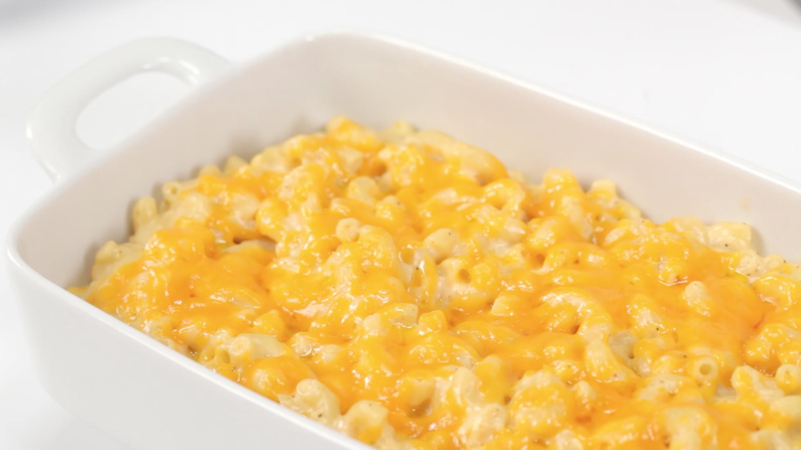

Unlimited Cheese Works

Seven different kinds of cheese loving goodness.
I personally love this Mac n cheese, it does make quite a bit tho so if cooking for a single family I would recommend you half your entire recipe. Also if you like creamier Mac n cheese try using 1-2 less eggs. Other then that I make this every year for thanksgiving and there is always never any leftover. Enjoy! Happy Holidays!
Ingredients
- 2 pounds elbow macaroni
- 12 eggs
- 1 cup cubed Velveeta cheese
- 6 cups half-and-half, divided
- 4 cups grated sharp yellow Cheddar, divided
- 2 cups grated extra-sharp white Cheddar
- 1 1/2 cups grated mozzarella
- 1 cup grated Asiago
- 1 cup grated Gruyere
- 1 cup grated Monterey Jack
- 1 cup grated Muenster
- 1/8 teaspoon salt
- 1 tablespoon black pepper
Steps
- Preheat the oven to 325 degrees F. Bring a large saucepan of salted water to a boil. Add the macaroni and cook until slightly al dente, about 10 minutes. Drain and set aside to keep warm.
- Whisk the eggs in a large bowl until frothy.
- Add the Velveeta, butter and 2 cups of the half-and-half to the large bowl of eggs. Add the warm macaroni tossing until the cheese has melted and the mixture is smooth. Add the remaining half-and-half, 3 cups of the sharp yellow Cheddar, the remaining grated cheeses, and salt and pepper, tossing until completely combined in the large bowl.
- Pour the mixture into 9 by 13-inch casserole or baking dishes (approximately 3 (3-quart) baking dishes) and bake for 30 minutes. Sprinkle with the remaining 1 cup of sharp yellow cheese and bake until golden brown on top, about 30 minutes more.
- Serve hot.